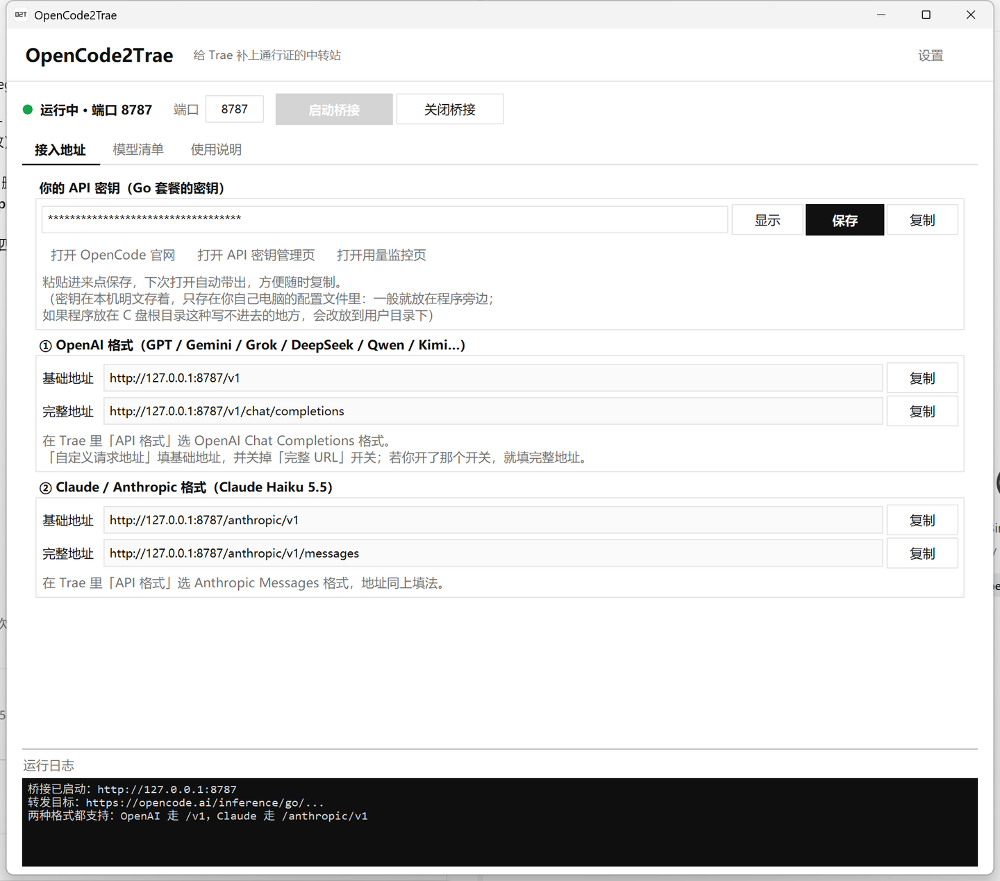
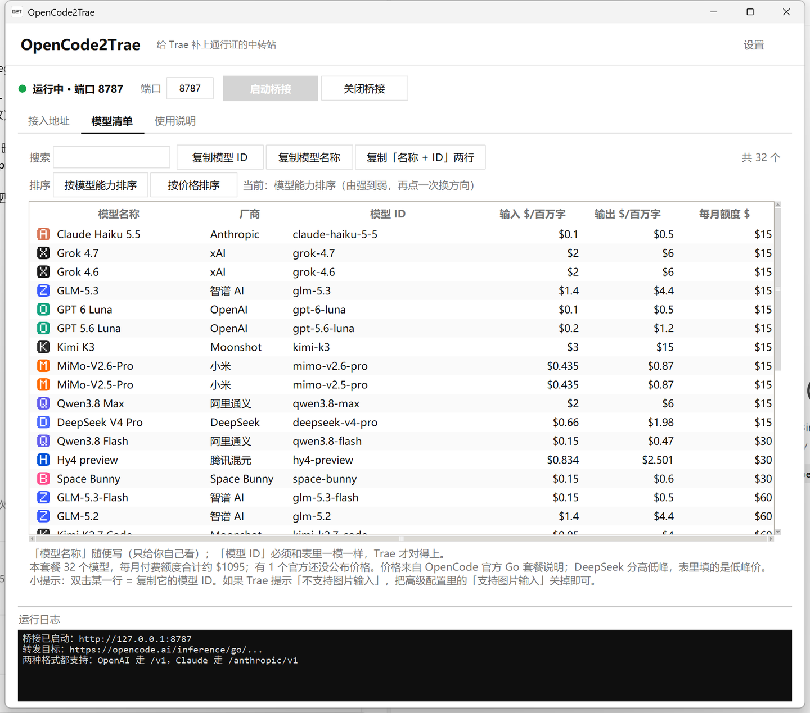

[*]
一键开关
点「启动桥接」就跑，左上角指示灯变绿=已接通；再点「关闭桥接」停下。端口还能自己改。
OpenCode 要求每个请求都带一张「通行证」，而 Trae 的自定义模型没地方填请求头， 于是请求被拦下、报 500。OpenCode2Trae 在你电脑上开一个本机中转站， 替 Trae 补上那张通行证——问题就没了。
下载 OpenCode2Trae.exe → 双击运行 → 点「启动桥接」
Windows 10 / 11 · 不用装 Python · 也可以只下载单个 .py 文件自己跑
一句话：Trae 少了 OpenCode 要的一张「通行证」，本程序专门负责补上它。 下面用大白话讲清楚整件事。
OpenCode Go 要求每个请求都带一个叫 x-opencode-session 的请求头——就像进楼要刷工牌。
Trae 的「自定义模型」设置里没有地方能填请求头，于是它一直被挡在门外，只能回来报错。
本程序在本机 127.0.0.1:8787 开个前台：接住 Trae 的请求 → 替它补上通行证 → 转给 OpenCode → 把结果原路送回。
全程只在你自己的电脑上跑，不经过任何第三方服务器。
一个窗口搞定「开桥接、拿密钥、抄模型 ID」，不用记命令、不用翻文档。
点「启动桥接」就跑，左上角指示灯变绿=已接通；再点「关闭桥接」停下。端口还能自己改。
把 Go 套餐的密钥粘进去点保存，下次打开自动带出，随时一键复制。
内置按钮一键打开 OpenCode 官网、API 密钥管理页、用量监控页（看这个月还剩多少额度）。
Go 套餐全部模型的名称与 ID 都在表里，支持搜索、双击即复制，再也不用一个个手打。
每个模型标注输入价、输出价、官方每月额度（$），还带厂商徽章，支持按能力/按价格排序。
OpenAI 格式走 /v1，Claude（Anthropic）格式走 /anthropic/v1，各取所需。
设置里可开「托盘模式」（关窗口=收进托盘继续跑）和「开机自动启动」，后台常驻不掉线。
核心只用 Python 标准库，一个 .py 文件带走；不想装 Python 就直接下 exe。
首次打开默认居中，之后自动记住上次的位置与大小；打开设置时还有半透明遮罩，干净利落。
极简配色，白底黑字，跟 OpenCode 一个调调。


从下载到在 Trae 里用上，不超过两分钟。
双击 OpenCode2Trae.exe，点界面最上面的「启动桥接」，左上角指示灯变绿即成功。
切到「接入地址」页，把 Go 套餐的密钥粘进去、点「保存」。
模型设置 → 添加自定义模型，按下表填请求地址；模型 ID 到「模型清单」页复制。
| 想用的模型 | API 格式 | 请求地址 |
|---|---|---|
| GPT / Gemini / Grok / DeepSeek / Qwen / Kimi / GLM 等 | OpenAI Chat Completions | http://127.0.0.1:8787/v1 |
| Claude | Anthropic Messages | http://127.0.0.1:8787/anthropic/v1 |
界面里把「完整 URL」开关打开的话，就填各自带 /chat/completions、/messages 的那一版。 本程序需要一直开着；开了托盘模式后关掉窗口会收进托盘继续跑。
127.0.0.1 上监听，不对外开放，也不向任何第三方服务器上传数据。
你的密钥只写在本机配置文件 opencode2trae-config.json 里（明文），不上传。
OpenCode2Trae.exe 双击即用。想跑源码的话，Python 3.8+ 自带 tkinter 就够，不需要 pip 装任何东西。